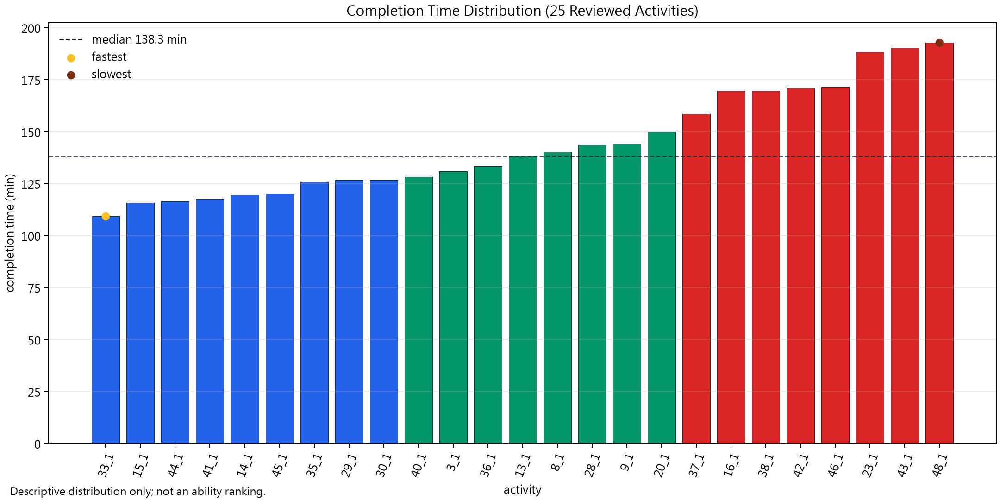
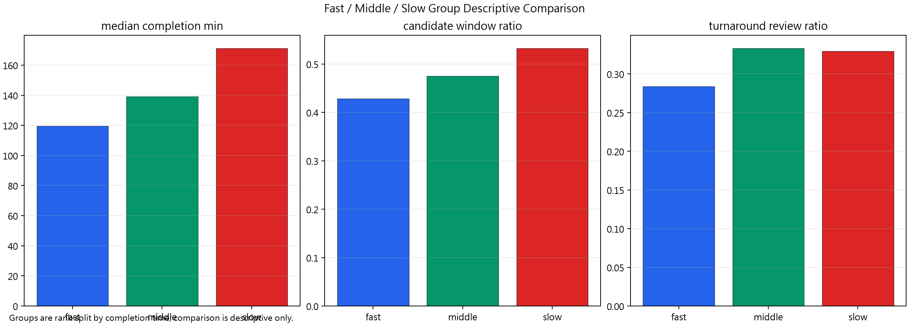
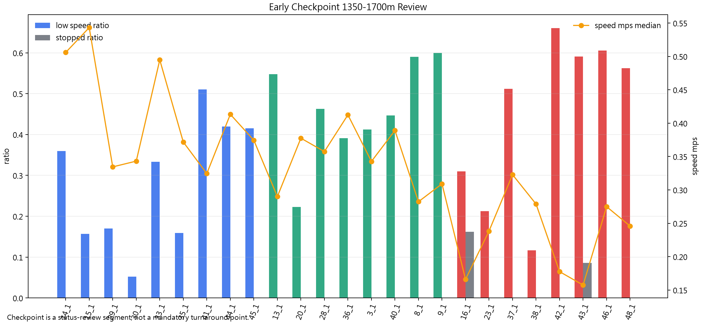

Descriptive completion feasibility review only. Completion time, group, route-load, behavior-response, weather, and event evidence are descriptive context. This output is not ability scoring, not route suitability scoring, not THCI/radar scoring, and not a final hiking risk assessment.



| activity_id_short | activity_id_full | completion_time_sec | completion_time_min | completion_time_source_column | completion_status | route_coverage_or_window_count | data_quality_flags | completion_review_boundary | completion_group |
|---|---|---|---|---|---|---|---|---|---|
| 33_1 | qixing_lengshuikeng_33_1 | 6562.0 | 109.3667 | activity_performance_summary.duration_sec | COMPLETED | 81 | COMPLETION_TIME_AVAILABLE | Descriptive completion feasibility review only. Completion time, group, route-load, behavior-response, weather, and event evidence are descriptive context. This output is not ability scoring, not route suitability scoring, not THCI/radar scoring, and not a final hiking risk assessment. | fast |
| 15_1 | qixing_lengshuikeng_15_1 | 6955.0 | 115.9167 | activity_performance_summary.duration_sec | COMPLETED | 81 | COMPLETION_TIME_AVAILABLE | Descriptive completion feasibility review only. Completion time, group, route-load, behavior-response, weather, and event evidence are descriptive context. This output is not ability scoring, not route suitability scoring, not THCI/radar scoring, and not a final hiking risk assessment. | fast |
| 44_1 | qixing_lengshuikeng_44_1 | 6992.0 | 116.5333 | activity_performance_summary.duration_sec | COMPLETED | 80 | COMPLETION_TIME_AVAILABLE | Descriptive completion feasibility review only. Completion time, group, route-load, behavior-response, weather, and event evidence are descriptive context. This output is not ability scoring, not route suitability scoring, not THCI/radar scoring, and not a final hiking risk assessment. | fast |
| 41_1 | qixing_lengshuikeng_41_1 | 7053.0 | 117.5500 | activity_performance_summary.duration_sec | COMPLETED | 83 | COMPLETION_TIME_AVAILABLE | Descriptive completion feasibility review only. Completion time, group, route-load, behavior-response, weather, and event evidence are descriptive context. This output is not ability scoring, not route suitability scoring, not THCI/radar scoring, and not a final hiking risk assessment. | fast |
| 14_1 | qixing_lengshuikeng_14_1 | 7180.0 | 119.6667 | activity_performance_summary.duration_sec | COMPLETED | 84 | COMPLETION_TIME_AVAILABLE | Descriptive completion feasibility review only. Completion time, group, route-load, behavior-response, weather, and event evidence are descriptive context. This output is not ability scoring, not route suitability scoring, not THCI/radar scoring, and not a final hiking risk assessment. | fast |
| 45_1 | qixing_lengshuikeng_45_1 | 7210.0 | 120.1667 | activity_performance_summary.duration_sec | COMPLETED | 81 | COMPLETION_TIME_AVAILABLE | Descriptive completion feasibility review only. Completion time, group, route-load, behavior-response, weather, and event evidence are descriptive context. This output is not ability scoring, not route suitability scoring, not THCI/radar scoring, and not a final hiking risk assessment. | fast |
| 35_1 | qixing_lengshuikeng_35_1 | 7549.0 | 125.8167 | activity_performance_summary.duration_sec | COMPLETED | 84 | COMPLETION_TIME_AVAILABLE | Descriptive completion feasibility review only. Completion time, group, route-load, behavior-response, weather, and event evidence are descriptive context. This output is not ability scoring, not route suitability scoring, not THCI/radar scoring, and not a final hiking risk assessment. | fast |
| 29_1 | qixing_lengshuikeng_29_1 | 7608.0 | 126.8000 | activity_performance_summary.duration_sec | COMPLETED | 84 | COMPLETION_TIME_AVAILABLE | Descriptive completion feasibility review only. Completion time, group, route-load, behavior-response, weather, and event evidence are descriptive context. This output is not ability scoring, not route suitability scoring, not THCI/radar scoring, and not a final hiking risk assessment. | fast |
| 30_1 | qixing_lengshuikeng_30_1 | 7610.0 | 126.8333 | activity_performance_summary.duration_sec | COMPLETED | 82 | COMPLETION_TIME_AVAILABLE | Descriptive completion feasibility review only. Completion time, group, route-load, behavior-response, weather, and event evidence are descriptive context. This output is not ability scoring, not route suitability scoring, not THCI/radar scoring, and not a final hiking risk assessment. | fast |
| 40_1 | qixing_lengshuikeng_40_1 | 7691.0 | 128.1833 | activity_performance_summary.duration_sec | COMPLETED | 81 | COMPLETION_TIME_AVAILABLE | Descriptive completion feasibility review only. Completion time, group, route-load, behavior-response, weather, and event evidence are descriptive context. This output is not ability scoring, not route suitability scoring, not THCI/radar scoring, and not a final hiking risk assessment. | middle |
| 3_1 | qixing_lengshuikeng_3_1 | 7858.0 | 130.9667 | activity_performance_summary.duration_sec | COMPLETED | 81 | COMPLETION_TIME_AVAILABLE | Descriptive completion feasibility review only. Completion time, group, route-load, behavior-response, weather, and event evidence are descriptive context. This output is not ability scoring, not route suitability scoring, not THCI/radar scoring, and not a final hiking risk assessment. | middle |
| 36_1 | qixing_lengshuikeng_36_1 | 8000.0 | 133.3333 | activity_performance_summary.duration_sec | COMPLETED | 81 | COMPLETION_TIME_AVAILABLE | Descriptive completion feasibility review only. Completion time, group, route-load, behavior-response, weather, and event evidence are descriptive context. This output is not ability scoring, not route suitability scoring, not THCI/radar scoring, and not a final hiking risk assessment. | middle |
| 13_1 | qixing_lengshuikeng_13_1 | 8301.0 | 138.3500 | activity_performance_summary.duration_sec | COMPLETED | 80 | COMPLETION_TIME_AVAILABLE | Descriptive completion feasibility review only. Completion time, group, route-load, behavior-response, weather, and event evidence are descriptive context. This output is not ability scoring, not route suitability scoring, not THCI/radar scoring, and not a final hiking risk assessment. | middle |
| 8_1 | qixing_lengshuikeng_8_1 | 8413.0 | 140.2167 | activity_performance_summary.duration_sec | COMPLETED | 84 | COMPLETION_TIME_AVAILABLE | Descriptive completion feasibility review only. Completion time, group, route-load, behavior-response, weather, and event evidence are descriptive context. This output is not ability scoring, not route suitability scoring, not THCI/radar scoring, and not a final hiking risk assessment. | middle |
| 28_1 | qixing_lengshuikeng_28_1 | 8621.0 | 143.6833 | activity_performance_summary.duration_sec | COMPLETED | 84 | COMPLETION_TIME_AVAILABLE | Descriptive completion feasibility review only. Completion time, group, route-load, behavior-response, weather, and event evidence are descriptive context. This output is not ability scoring, not route suitability scoring, not THCI/radar scoring, and not a final hiking risk assessment. | middle |
| 9_1 | qixing_lengshuikeng_9_1 | 8642.0 | 144.0333 | activity_performance_summary.duration_sec | COMPLETED | 81 | COMPLETION_TIME_AVAILABLE | Descriptive completion feasibility review only. Completion time, group, route-load, behavior-response, weather, and event evidence are descriptive context. This output is not ability scoring, not route suitability scoring, not THCI/radar scoring, and not a final hiking risk assessment. | middle |
| 20_1 | qixing_lengshuikeng_20_1 | 8997.0 | 149.9500 | activity_performance_summary.duration_sec | COMPLETED | 79 | COMPLETION_TIME_AVAILABLE | Descriptive completion feasibility review only. Completion time, group, route-load, behavior-response, weather, and event evidence are descriptive context. This output is not ability scoring, not route suitability scoring, not THCI/radar scoring, and not a final hiking risk assessment. | middle |
| 37_1 | qixing_lengshuikeng_37_1 | 9511.0 | 158.5167 | activity_performance_summary.duration_sec | COMPLETED | 80 | COMPLETION_TIME_AVAILABLE | Descriptive completion feasibility review only. Completion time, group, route-load, behavior-response, weather, and event evidence are descriptive context. This output is not ability scoring, not route suitability scoring, not THCI/radar scoring, and not a final hiking risk assessment. | slow |
| 16_1 | qixing_lengshuikeng_16_1 | 10185.0 | 169.7500 | activity_performance_summary.duration_sec | COMPLETED | 83 | COMPLETION_TIME_AVAILABLE | Descriptive completion feasibility review only. Completion time, group, route-load, behavior-response, weather, and event evidence are descriptive context. This output is not ability scoring, not route suitability scoring, not THCI/radar scoring, and not a final hiking risk assessment. | slow |
| 38_1 | qixing_lengshuikeng_38_1 | 10186.0 | 169.7667 | activity_performance_summary.duration_sec | COMPLETED | 81 | COMPLETION_TIME_AVAILABLE | Descriptive completion feasibility review only. Completion time, group, route-load, behavior-response, weather, and event evidence are descriptive context. This output is not ability scoring, not route suitability scoring, not THCI/radar scoring, and not a final hiking risk assessment. | slow |
| 42_1 | qixing_lengshuikeng_42_1 | 10266.0 | 171.1000 | activity_performance_summary.duration_sec | COMPLETED | 84 | COMPLETION_TIME_AVAILABLE | Descriptive completion feasibility review only. Completion time, group, route-load, behavior-response, weather, and event evidence are descriptive context. This output is not ability scoring, not route suitability scoring, not THCI/radar scoring, and not a final hiking risk assessment. | slow |
| 46_1 | qixing_lengshuikeng_46_1 | 10290.0 | 171.5000 | activity_performance_summary.duration_sec | COMPLETED | 84 | COMPLETION_TIME_AVAILABLE | Descriptive completion feasibility review only. Completion time, group, route-load, behavior-response, weather, and event evidence are descriptive context. This output is not ability scoring, not route suitability scoring, not THCI/radar scoring, and not a final hiking risk assessment. | slow |
| 23_1 | qixing_lengshuikeng_23_1 | 11304.0 | 188.4000 | activity_performance_summary.duration_sec | COMPLETED | 83 | COMPLETION_TIME_AVAILABLE | Descriptive completion feasibility review only. Completion time, group, route-load, behavior-response, weather, and event evidence are descriptive context. This output is not ability scoring, not route suitability scoring, not THCI/radar scoring, and not a final hiking risk assessment. | slow |
| 43_1 | qixing_lengshuikeng_43_1 | 11432.0 | 190.5333 | activity_performance_summary.duration_sec | COMPLETED | 84 | COMPLETION_TIME_AVAILABLE | Descriptive completion feasibility review only. Completion time, group, route-load, behavior-response, weather, and event evidence are descriptive context. This output is not ability scoring, not route suitability scoring, not THCI/radar scoring, and not a final hiking risk assessment. | slow |
| 48_1 | qixing_lengshuikeng_48_1 | 11567.0 | 192.7833 | activity_performance_summary.duration_sec | COMPLETED | 84 | COMPLETION_TIME_AVAILABLE | Descriptive completion feasibility review only. Completion time, group, route-load, behavior-response, weather, and event evidence are descriptive context. This output is not ability scoring, not route suitability scoring, not THCI/radar scoring, and not a final hiking risk assessment. | slow |
| group_label | activity_count | completion_time_min_median | completion_time_min_min | completion_time_min_max | routine_window_ratio_median | review_window_ratio_median | conservative_window_ratio_median | turnaround_review_window_ratio_median | candidate_window_ratio_median | low_speed_ratio_median | stopped_ratio_median | heart_rate_median | data_quality_summary |
|---|---|---|---|---|---|---|---|---|---|---|---|---|---|
| fast | 9 | 119.66670 | 109.3667 | 126.8333 | 0.240964 | 0.185185 | 0.296296 | 0.283951 | 0.428571 | 0.068182 | 0.0 | 152.0 | DESCRIPTIVE_MEDIANS_FROM_AVAILABLE_FIELDS |
| middle | 8 | 139.28335 | 128.1833 | 149.9500 | 0.248457 | 0.200031 | 0.203704 | 0.333333 | 0.475595 | 0.177803 | 0.0 | 151.0 | DESCRIPTIVE_MEDIANS_FROM_AVAILABLE_FIELDS |
| slow | 8 | 171.30000 | 158.5167 | 192.7833 | 0.231742 | 0.215577 | 0.219545 | 0.329317 | 0.532917 | 0.242482 | 0.0 | 130.0 | DESCRIPTIVE_MEDIANS_FROM_AVAILABLE_FIELDS |
| activity_id_short | completion_time_min | completion_group | temperature_c | relative_humidity_pct | precipitation_mm | wind_speed_ms | wind_gust_ms | uv_index | weather_context_flags | environment_context_flags | weather_attach_level | weather_context_available | weather_interpretation_flags |
|---|---|---|---|---|---|---|---|---|---|---|---|---|---|
| 33_1 | 109.3667 | fast | 23.8 | 91.4 | 0.0 | 3.1 | 6.8 | 11.0 | 無觀測降雨、高濕 ≥90%、有陣風觀測、日照 ≥60 分、UV ≥6 | NONE | WEATHER_ACTIVITY_LEVEL_ONLY | True | WEATHER_ADVERSE_CONTEXT_PRESENT |
| 15_1 | 115.9167 | fast | 25.3 | 90.4 | 0.0 | 1.7 | 7.1 | 6.0 | 無觀測降雨、高濕 ≥90%、有陣風觀測、日照 ≥60 分、UV ≥6 | NONE | WEATHER_ACTIVITY_LEVEL_ONLY | True | WEATHER_ADVERSE_CONTEXT_PRESENT |
| 44_1 | 116.5333 | fast | 23.8 | 91.4 | 0.0 | 3.1 | 6.8 | 11.0 | 無觀測降雨、高濕 ≥90%、有陣風觀測、日照 ≥60 分、UV ≥6 | NONE | WEATHER_ACTIVITY_LEVEL_ONLY | True | WEATHER_ADVERSE_CONTEXT_PRESENT |
| 41_1 | 117.5500 | fast | 23.8 | 91.4 | 0.0 | 3.1 | 6.8 | 11.0 | 無觀測降雨、高濕 ≥90%、有陣風觀測、日照 ≥60 分、UV ≥6 | NONE | WEATHER_ACTIVITY_LEVEL_ONLY | True | WEATHER_ADVERSE_CONTEXT_PRESENT |
| 14_1 | 119.6667 | fast | 24.8 | 88.8 | 0.0 | 1.4 | 7.6 | 6.0 | 無觀測降雨、濕度 <90%、有陣風觀測、日照 ≥60 分、UV ≥6 | NONE | WEATHER_ACTIVITY_LEVEL_ONLY | True | WEATHER_ADVERSE_CONTEXT_PRESENT |
| 45_1 | 120.1667 | fast | 23.8 | 91.4 | 0.0 | 3.1 | 6.8 | 11.0 | 無觀測降雨、高濕 ≥90%、有陣風觀測、日照 ≥60 分、UV ≥6 | NONE | WEATHER_ACTIVITY_LEVEL_ONLY | True | WEATHER_ADVERSE_CONTEXT_PRESENT |
| 35_1 | 125.8167 | fast | 25.3 | 90.4 | 0.0 | 1.7 | 7.1 | 6.0 | 無觀測降雨、高濕 ≥90%、有陣風觀測、日照 ≥60 分、UV ≥6 | NONE | WEATHER_ACTIVITY_LEVEL_ONLY | True | WEATHER_ADVERSE_CONTEXT_PRESENT |
| 29_1 | 126.8000 | fast | 24.0 | 94.2 | 1.0 | 2.1 | 5.8 | 7.0 | 有觀測降雨、高濕 ≥90%、有陣風觀測、日照 ≥60 分、UV ≥6 | NONE | WEATHER_ACTIVITY_LEVEL_ONLY | True | WEATHER_ADVERSE_CONTEXT_PRESENT |
| 30_1 | 126.8333 | fast | 25.3 | 90.4 | 0.0 | 1.7 | 7.1 | 6.0 | 無觀測降雨、高濕 ≥90%、有陣風觀測、日照 ≥60 分、UV ≥6 | NONE | WEATHER_ACTIVITY_LEVEL_ONLY | True | WEATHER_ADVERSE_CONTEXT_PRESENT |
| 40_1 | 128.1833 | middle | 24.5 | 89.6 | 0.0 | 3.2 | 6.8 | 11.0 | 無觀測降雨、濕度 <90%、有陣風觀測、日照 ≥60 分、UV ≥6 | NONE | WEATHER_ACTIVITY_LEVEL_ONLY | True | WEATHER_ADVERSE_CONTEXT_PRESENT |
| 3_1 | 130.9667 | middle | 23.1 | 94.0 | 0.0 | 4.8 | 14.7 | 6.0 | 無觀測降雨、高濕 ≥90%、有陣風觀測、陣風 ≥10 m/s、日照 ≥60 分、UV ≥6 | NONE | WEATHER_ACTIVITY_LEVEL_ONLY | True | WEATHER_ADVERSE_CONTEXT_PRESENT |
| 36_1 | 133.3333 | middle | 25.3 | 90.4 | 0.0 | 1.7 | 7.1 | 6.0 | 無觀測降雨、高濕 ≥90%、有陣風觀測、日照 ≥60 分、UV ≥6 | NONE | WEATHER_ACTIVITY_LEVEL_ONLY | True | WEATHER_ADVERSE_CONTEXT_PRESENT |
| 13_1 | 138.3500 | middle | 25.1 | 88.0 | 0.0 | 1.5 | 7.6 | 9.0 | 無觀測降雨、濕度 <90%、有陣風觀測、日照 ≥60 分、UV ≥6 | NONE | WEATHER_ACTIVITY_LEVEL_ONLY | True | WEATHER_ADVERSE_CONTEXT_PRESENT |
| 8_1 | 140.2167 | middle | 25.1 | 88.0 | 0.0 | 1.5 | 7.6 | 9.0 | 無觀測降雨、濕度 <90%、有陣風觀測、日照 ≥60 分、UV ≥6 | NONE | WEATHER_ACTIVITY_LEVEL_ONLY | True | WEATHER_ADVERSE_CONTEXT_PRESENT |
| 28_1 | 143.6833 | middle | 25.9 | 88.2 | 0.0 | 1.9 | 7.1 | 7.0 | 無觀測降雨、濕度 <90%、有陣風觀測、日照 ≥60 分、UV ≥6 | NONE | WEATHER_ACTIVITY_LEVEL_ONLY | True | WEATHER_ADVERSE_CONTEXT_PRESENT |
| 9_1 | 144.0333 | middle | 22.0 | 100.0 | 44.5 | 4.3 | 14.5 | 1.0 | 有觀測降雨、高濕 ≥90%、有陣風觀測、陣風 ≥10 m/s、累積降雨 ≥5 mm、無日照 | NONE | WEATHER_ACTIVITY_LEVEL_ONLY | True | WEATHER_ADVERSE_CONTEXT_PRESENT |
| 20_1 | 149.9500 | middle | 24.8 | 88.8 | 0.0 | 1.4 | 7.6 | 6.0 | 無觀測降雨、濕度 <90%、有陣風觀測、日照 ≥60 分、UV ≥6 | NONE | WEATHER_ACTIVITY_LEVEL_ONLY | True | WEATHER_ADVERSE_CONTEXT_PRESENT |
| 37_1 | 158.5167 | slow | 25.6 | 89.6 | 0.0 | 1.8 | 7.1 | 7.0 | 無觀測降雨、濕度 <90%、有陣風觀測、日照 ≥60 分、UV ≥6 | NONE | WEATHER_ACTIVITY_LEVEL_ONLY | True | WEATHER_ADVERSE_CONTEXT_PRESENT |
| 16_1 | 169.7500 | slow | 24.8 | 88.8 | 0.0 | 1.4 | 7.6 | 6.0 | 無觀測降雨、濕度 <90%、有陣風觀測、日照 ≥60 分、UV ≥6 | NONE | WEATHER_ACTIVITY_LEVEL_ONLY | True | WEATHER_ADVERSE_CONTEXT_PRESENT |
| 38_1 | 169.7667 | slow | 24.1 | 90.8 | 0.0 | 3.2 | 6.8 | 11.0 | 無觀測降雨、高濕 ≥90%、有陣風觀測、日照 ≥60 分、UV ≥6 | NONE | WEATHER_ACTIVITY_LEVEL_ONLY | True | WEATHER_ADVERSE_CONTEXT_PRESENT |
| 42_1 | 171.1000 | slow | 23.9 | 89.7 | 0.0 | 3.1 | 7.4 | 8.0 | 無觀測降雨、濕度 <90%、有陣風觀測、日照 ≥60 分、UV ≥6 | NONE | WEATHER_ACTIVITY_LEVEL_ONLY | True | WEATHER_ADVERSE_CONTEXT_PRESENT |
| 46_1 | 171.5000 | slow | 23.9 | 89.7 | 0.0 | 3.1 | 7.4 | 8.0 | 無觀測降雨、濕度 <90%、有陣風觀測、日照 ≥60 分、UV ≥6 | NONE | WEATHER_ACTIVITY_LEVEL_ONLY | True | WEATHER_ADVERSE_CONTEXT_PRESENT |
| 23_1 | 188.4000 | slow | 25.1 | 88.0 | 0.0 | 1.5 | 7.6 | 9.0 | 無觀測降雨、濕度 <90%、有陣風觀測、日照 ≥60 分、UV ≥6 | NONE | WEATHER_ACTIVITY_LEVEL_ONLY | True | WEATHER_ADVERSE_CONTEXT_PRESENT |
| 43_1 | 190.5333 | slow | 24.1 | 90.8 | 0.0 | 3.2 | 6.8 | 11.0 | 無觀測降雨、高濕 ≥90%、有陣風觀測、日照 ≥60 分、UV ≥6 | NONE | WEATHER_ACTIVITY_LEVEL_ONLY | True | WEATHER_ADVERSE_CONTEXT_PRESENT |
| 48_1 | 192.7833 | slow | 23.2 | 95.4 | 0.0 | 2.1 | 11.4 | 6.0 | 無觀測降雨、高濕 ≥90%、有陣風觀測、陣風 ≥10 m/s、UV ≥6 | NONE | WEATHER_ACTIVITY_LEVEL_ONLY | True | WEATHER_ADVERSE_CONTEXT_PRESENT |
| group_label | activity_count | completion_time_min_median | temperature_c_median | relative_humidity_pct_median | precipitation_mm_median | wind_gust_ms_median | uv_index_median | weather_adverse_context_count | weather_context_summary |
|---|---|---|---|---|---|---|---|---|---|
| fast | 9 | 119.6667 | 24.00 | 91.4 | 0.0 | 6.8 | 7.0 | 9 | WEATHER_ADVERSE_CONTEXT_PRESENT |
| middle | 8 | 139.2833 | 24.95 | 89.2 | 0.0 | 7.6 | 6.5 | 8 | WEATHER_ADVERSE_CONTEXT_PRESENT |
| slow | 8 | 171.3000 | 24.10 | 89.7 | 0.0 | 7.4 | 8.0 | 8 | WEATHER_ADVERSE_CONTEXT_PRESENT |
| activity_id_short | completion_group | segment_start_m | segment_end_m | window_count | dominant_planning_caution_level | max_route_load_context_index_0_100 | dominant_route_load_context_band | candidate_windows_n | behavior_response_flags_merged | event_annotation_flags_merged | speed_mps_median | low_speed_ratio_median | stopped_ratio_median | heart_rate_bpm_median | segment_completion_interpretation |
|---|---|---|---|---|---|---|---|---|---|---|---|---|---|---|---|
| 14_1 | fast | 1350 | 1700 | 7 | TURNAROUND_CONDITION_REVIEW_RECOMMENDED | 100.0 | VERY_HIGH_ROUTE_LOAD_CONTEXT | 6 | SPEED_BELOW_LOW_SPEED_THRESHOLD|LOW_SPEED_RATIO_HIGH|ACTIVITY_RELATIVE_HIGH_HR_WINDOW | NONE | 0.505954 | 0.359551 | 0.000000 | 161.0 | PASSED_BUT_REVIEW_REQUIRED |
| 15_1 | fast | 1350 | 1700 | 7 | TURNAROUND_CONDITION_REVIEW_RECOMMENDED | 100.0 | VERY_HIGH_ROUTE_LOAD_CONTEXT | 6 | SPEED_BELOW_LOW_SPEED_THRESHOLD|ACTIVITY_RELATIVE_HIGH_HR_WINDOW | NONE | 0.543218 | 0.156863 | 0.000000 | 156.0 | PASSED_BUT_REVIEW_REQUIRED |
| 29_1 | fast | 1350 | 1700 | 7 | TURNAROUND_CONDITION_REVIEW_RECOMMENDED | 100.0 | VERY_HIGH_ROUTE_LOAD_CONTEXT | 6 | SPEED_BELOW_LOW_SPEED_THRESHOLD|ACTIVITY_RELATIVE_HIGH_HR_WINDOW | NONE | 0.334509 | 0.170000 | 0.000000 | 156.0 | PASSED_BUT_REVIEW_REQUIRED |
| 30_1 | fast | 1350 | 1700 | 7 | TURNAROUND_CONDITION_REVIEW_RECOMMENDED | 100.0 | VERY_HIGH_ROUTE_LOAD_CONTEXT | 6 | ACTIVITY_RELATIVE_HIGH_HR_WINDOW|SPEED_BELOW_LOW_SPEED_THRESHOLD | NONE | 0.343144 | 0.052147 | 0.000000 | 158.0 | PASSED_BUT_REVIEW_REQUIRED |
| 33_1 | fast | 1350 | 1700 | 7 | TURNAROUND_CONDITION_REVIEW_RECOMMENDED | 100.0 | VERY_HIGH_ROUTE_LOAD_CONTEXT | 6 | ACTIVITY_RELATIVE_HIGH_HR_WINDOW|SPEED_BELOW_LOW_SPEED_THRESHOLD|LOW_SPEED_RATIO_HIGH | NONE | 0.494833 | 0.333333 | 0.000000 | 166.5 | PASSED_BUT_REVIEW_REQUIRED |
| 35_1 | fast | 1350 | 1700 | 7 | TURNAROUND_CONDITION_REVIEW_RECOMMENDED | 100.0 | VERY_HIGH_ROUTE_LOAD_CONTEXT | 6 | ACTIVITY_RELATIVE_HIGH_HR_WINDOW|SPEED_BELOW_LOW_SPEED_THRESHOLD | NONE | 0.371758 | 0.158683 | 0.000000 | 162.0 | PASSED_BUT_REVIEW_REQUIRED |
| 41_1 | fast | 1350 | 1700 | 7 | TURNAROUND_CONDITION_REVIEW_RECOMMENDED | 100.0 | VERY_HIGH_ROUTE_LOAD_CONTEXT | 6 | SPEED_BELOW_LOW_SPEED_THRESHOLD|LOW_SPEED_RATIO_HIGH|STOP_RATIO_OBSERVED | NONE | 0.324480 | 0.510638 | 0.000000 | 151.0 | PASSED_BUT_REVIEW_REQUIRED |
| 44_1 | fast | 1350 | 1700 | 7 | TURNAROUND_CONDITION_REVIEW_RECOMMENDED | 100.0 | VERY_HIGH_ROUTE_LOAD_CONTEXT | 6 | SPEED_BELOW_LOW_SPEED_THRESHOLD|LOW_SPEED_RATIO_HIGH|ACTIVITY_RELATIVE_HIGH_HR_WINDOW|STOP_RATIO_OBSERVED | NONE | 0.413291 | 0.419355 | 0.000000 | 169.0 | PASSED_BUT_REVIEW_REQUIRED |
| 45_1 | fast | 1350 | 1700 | 7 | TURNAROUND_CONDITION_REVIEW_RECOMMENDED | 100.0 | VERY_HIGH_ROUTE_LOAD_CONTEXT | 6 | SPEED_BELOW_LOW_SPEED_THRESHOLD|LOW_SPEED_RATIO_HIGH|ACTIVITY_RELATIVE_HIGH_HR_WINDOW | NONE | 0.374442 | 0.415385 | 0.000000 | 165.0 | PASSED_BUT_REVIEW_REQUIRED |
| 13_1 | middle | 1350 | 1700 | 7 | TURNAROUND_CONDITION_REVIEW_RECOMMENDED | 100.0 | VERY_HIGH_ROUTE_LOAD_CONTEXT | 6 | ACTIVITY_RELATIVE_HIGH_HR_WINDOW|SPEED_BELOW_LOW_SPEED_THRESHOLD|LOW_SPEED_RATIO_HIGH | NONE | 0.290017 | 0.547945 | 0.000000 | 167.0 | PASSED_BUT_REVIEW_REQUIRED |
| 20_1 | middle | 1350 | 1700 | 7 | TURNAROUND_CONDITION_REVIEW_RECOMMENDED | 100.0 | VERY_HIGH_ROUTE_LOAD_CONTEXT | 6 | SPEED_BELOW_LOW_SPEED_THRESHOLD|ACTIVITY_RELATIVE_HIGH_HR_WINDOW | NONE | 0.377506 | 0.222826 | 0.000000 | 165.0 | PASSED_BUT_REVIEW_REQUIRED |
| 28_1 | middle | 1350 | 1700 | 7 | TURNAROUND_CONDITION_REVIEW_RECOMMENDED | 100.0 | VERY_HIGH_ROUTE_LOAD_CONTEXT | 6 | SPEED_BELOW_LOW_SPEED_THRESHOLD|LOW_SPEED_RATIO_HIGH|STOP_RATIO_OBSERVED|ACTIVITY_RELATIVE_HIGH_HR_WINDOW | NONE | 0.357460 | 0.462810 | 0.000000 | 158.5 | PASSED_BUT_REVIEW_REQUIRED |
| 36_1 | middle | 1350 | 1700 | 7 | TURNAROUND_CONDITION_REVIEW_RECOMMENDED | 100.0 | VERY_HIGH_ROUTE_LOAD_CONTEXT | 6 | ACTIVITY_RELATIVE_HIGH_HR_WINDOW|SPEED_BELOW_LOW_SPEED_THRESHOLD|LOW_SPEED_RATIO_HIGH | NONE | 0.412476 | 0.391304 | 0.000000 | 186.0 | PASSED_BUT_REVIEW_REQUIRED |
| 3_1 | middle | 1350 | 1700 | 7 | TURNAROUND_CONDITION_REVIEW_RECOMMENDED | 100.0 | VERY_HIGH_ROUTE_LOAD_CONTEXT | 6 | SPEED_BELOW_LOW_SPEED_THRESHOLD|LOW_SPEED_RATIO_HIGH|ACTIVITY_RELATIVE_HIGH_HR_WINDOW|STOP_RATIO_OBSERVED | NONE | 0.342704 | 0.412281 | 0.000000 | 113.0 | PASSED_BUT_REVIEW_REQUIRED |
| 40_1 | middle | 1350 | 1700 | 7 | TURNAROUND_CONDITION_REVIEW_RECOMMENDED | 100.0 | VERY_HIGH_ROUTE_LOAD_CONTEXT | 6 | SPEED_BELOW_LOW_SPEED_THRESHOLD|LOW_SPEED_RATIO_HIGH|ACTIVITY_RELATIVE_HIGH_HR_WINDOW|STOP_RATIO_OBSERVED | NONE | 0.389124 | 0.446809 | 0.000000 | 145.0 | PASSED_BUT_REVIEW_REQUIRED |
| 8_1 | middle | 1350 | 1700 | 7 | TURNAROUND_CONDITION_REVIEW_RECOMMENDED | 100.0 | VERY_HIGH_ROUTE_LOAD_CONTEXT | 6 | ACTIVITY_RELATIVE_HIGH_HR_WINDOW|SPEED_BELOW_LOW_SPEED_THRESHOLD|LOW_SPEED_RATIO_HIGH|STOP_RATIO_OBSERVED | NONE | 0.282313 | 0.590090 | 0.000000 | 174.0 | PASSED_BUT_REVIEW_REQUIRED |
| 9_1 | middle | 1350 | 1700 | 7 | TURNAROUND_CONDITION_REVIEW_RECOMMENDED | 100.0 | VERY_HIGH_ROUTE_LOAD_CONTEXT | 6 | SPEED_BELOW_LOW_SPEED_THRESHOLD|LOW_SPEED_RATIO_HIGH|ACTIVITY_RELATIVE_HIGH_HR_WINDOW | NONE | 0.309104 | 0.600000 | 0.000000 | 169.0 | PASSED_BUT_REVIEW_REQUIRED |
| 16_1 | slow | 1350 | 1700 | 7 | TURNAROUND_CONDITION_REVIEW_RECOMMENDED | 100.0 | VERY_HIGH_ROUTE_LOAD_CONTEXT | 6 | SPEED_BELOW_LOW_SPEED_THRESHOLD|LOW_SPEED_RATIO_HIGH|STOP_RATIO_OBSERVED|ACTIVITY_RELATIVE_HIGH_HR_WINDOW | NONE | 0.165941 | 0.310078 | 0.162011 | 134.0 | PASSED_BUT_REVIEW_REQUIRED |
| 23_1 | slow | 1350 | 1700 | 7 | TURNAROUND_CONDITION_REVIEW_RECOMMENDED | 100.0 | VERY_HIGH_ROUTE_LOAD_CONTEXT | 6 | ACTIVITY_RELATIVE_HIGH_HR_WINDOW|SPEED_BELOW_LOW_SPEED_THRESHOLD | NONE | 0.238380 | 0.212815 | 0.000000 | 155.0 | PASSED_BUT_REVIEW_REQUIRED |
| 37_1 | slow | 1350 | 1700 | 7 | TURNAROUND_CONDITION_REVIEW_RECOMMENDED | 100.0 | VERY_HIGH_ROUTE_LOAD_CONTEXT | 6 | ACTIVITY_RELATIVE_HIGH_HR_WINDOW|SPEED_BELOW_LOW_SPEED_THRESHOLD|LOW_SPEED_RATIO_HIGH|STOP_RATIO_OBSERVED | NONE | 0.322829 | 0.511905 | 0.000000 | 169.0 | PASSED_BUT_REVIEW_REQUIRED |
| 38_1 | slow | 1350 | 1700 | 7 | TURNAROUND_CONDITION_REVIEW_RECOMMENDED | 100.0 | VERY_HIGH_ROUTE_LOAD_CONTEXT | 6 | ACTIVITY_RELATIVE_HIGH_HR_WINDOW|SPEED_BELOW_LOW_SPEED_THRESHOLD | NONE | 0.278789 | 0.116505 | 0.000000 | 121.0 | PASSED_BUT_REVIEW_REQUIRED |
| 42_1 | slow | 1350 | 1700 | 7 | TURNAROUND_CONDITION_REVIEW_RECOMMENDED | 100.0 | VERY_HIGH_ROUTE_LOAD_CONTEXT | 6 | SPEED_BELOW_LOW_SPEED_THRESHOLD|LOW_SPEED_RATIO_HIGH|STOP_RATIO_OBSERVED|ACTIVITY_RELATIVE_HIGH_HR_WINDOW | EVENT_SHORT_PAUSE|EVENT_HIGH_HR_RECOVERY_STOP | 0.177525 | 0.660256 | 0.000000 | 151.0 | PASSED_BUT_REVIEW_REQUIRED |
| 43_1 | slow | 1350 | 1700 | 7 | TURNAROUND_CONDITION_REVIEW_RECOMMENDED | 100.0 | VERY_HIGH_ROUTE_LOAD_CONTEXT | 6 | SPEED_BELOW_LOW_SPEED_THRESHOLD|LOW_SPEED_RATIO_HIGH|STOP_RATIO_OBSERVED|ACTIVITY_RELATIVE_HIGH_HR_WINDOW | NONE | 0.157420 | 0.590909 | 0.085586 | 134.5 | PASSED_BUT_REVIEW_REQUIRED |
| 46_1 | slow | 1350 | 1700 | 7 | TURNAROUND_CONDITION_REVIEW_RECOMMENDED | 100.0 | VERY_HIGH_ROUTE_LOAD_CONTEXT | 6 | SPEED_BELOW_LOW_SPEED_THRESHOLD|LOW_SPEED_RATIO_HIGH|STOP_RATIO_OBSERVED|ACTIVITY_RELATIVE_HIGH_HR_WINDOW | NONE | 0.274921 | 0.605701 | 0.000000 | 153.0 | PASSED_BUT_REVIEW_REQUIRED |
| 48_1 | slow | 1350 | 1700 | 7 | TURNAROUND_CONDITION_REVIEW_RECOMMENDED | 100.0 | VERY_HIGH_ROUTE_LOAD_CONTEXT | 6 | SPEED_BELOW_LOW_SPEED_THRESHOLD|LOW_SPEED_RATIO_HIGH|ACTIVITY_RELATIVE_HIGH_HR_WINDOW|STOP_RATIO_OBSERVED | NONE | 0.245759 | 0.562500 | 0.000000 | 130.0 | PASSED_BUT_REVIEW_REQUIRED |
| all_reviewed_activities_completed | fastest_completion_time_min | median_completion_time_min | slowest_completion_time_min | slowest_minus_fastest_min | slow_group_completed | slow_group_early_checkpoint_passed | slow_group_unrecoverable_delay_evidence | early_checkpoint_recommended_interpretation | route_level_feasibility_statement | planning_statement | weather_aware_interpretation | boundary_statement |
|---|---|---|---|---|---|---|---|---|---|---|---|---|
| True | 109.3667 | 138.35 | 192.7833 | 83.4166 | True | True | False | EARLY_STATUS_CHECKPOINT_NOT_MANDATORY_TURNAROUND_POINT | BASIC_PREPARED_HIKERS_COMPLETION_FEASIBLE | COMPLETION_FEASIBLE_BUT_CONSERVATIVE_PLANNING_RECOMMENDED | SLOW_GROUP_COMPLETED_UNDER_LESS_FAVORABLE_WEATHER_SUPPORTS_BASIC_COMPLETION_FEASIBILITY | Descriptive completion feasibility review only. Completion time, group, route-load, behavior-response, weather, and event evidence are descriptive context. This output is not ability scoring, not route suitability scoring, not THCI/radar scoring, and not a final hiking risk assessment. |
| input_files_found | input_files_missing | completion_time_source_column | completion_time_available_count | reviewed_activity_count | completed_activity_count | fast_group_count | middle_group_count | slow_group_count | early_checkpoint_window_count | slow_group_completed_count | slow_group_early_checkpoint_reviewed_count | weather_context_available_count | weather_context_missing_count | insufficient_field_warnings | forbidden_output_columns_absent | forbidden_output_columns | output_files_generated | audit_conclusion |
|---|---|---|---|---|---|---|---|---|---|---|---|---|---|---|---|---|---|---|
| planning_windows|planning_summary|route_load_windows|route_load_candidates|route_load_summary|performance_summary|route_normalized_comparison|weather_profile|weather_performance_join | NONE | activity_performance_summary.duration_sec | 25 | 25 | 25 | 9 | 8 | 8 | 175 | 8 | 8 | 25 | 0 | NONE | True | NONE | D:\mountain_work\115_osm\outputs\report_figures\ch6_7_completion_feasibility_review_v1\completion_time_distribution_v1.csv|D:\mountain_work\115_osm\outputs\report_figures\ch6_7_completion_feasibility_review_v1\completion_feasibility_group_summary_v1.csv|D:\mountain_work\115_osm\outputs\report_figures\ch6_7_completion_feasibility_review_v1\activity_completion_weather_context_v1.csv|D:\mountain_work\115_osm\outputs\report_figures\ch6_7_completion_feasibility_review_v1\completion_weather_group_summary_v1.csv|D:\mountain_work\115_osm\outputs\report_figures\ch6_7_completion_feasibility_review_v1\early_checkpoint_segment_review_v1.csv|D:\mountain_work\115_osm\outputs\report_figures\ch6_7_completion_feasibility_review_v1\completion_feasibility_conclusion_v1.csv|D:\mountain_work\115_osm\outputs\report_figures\ch6_7_completion_feasibility_review_v1\completion_feasibility_review_audit_v1.csv|D:\mountain_work\115_osm\outputs\report_figures\ch6_7_completion_feasibility_review_v1\completion_feasibility_review_run_report_v1.md|D:\mountain_work\115_osm\outputs\report_figures\ch6_7_completion_feasibility_review_v1\completion_feasibility_review_report_v1.html|D:\mountain_work\115_osm\outputs\report_figures\ch6_7_completion_feasibility_review_v1\completion_time_distribution_v1.png|D:\mountain_work\115_osm\outputs\report_figures\ch6_7_completion_feasibility_review_v1\fast_middle_slow_group_comparison_v1.png|D:\mountain_work\115_osm\outputs\report_figures\ch6_7_completion_feasibility_review_v1\early_checkpoint_1350_1700m_review_v1.png | PASS_CH6_7_COMPLETION_FEASIBILITY_REVIEW_V1_DESCRIPTIVE_ONLY |